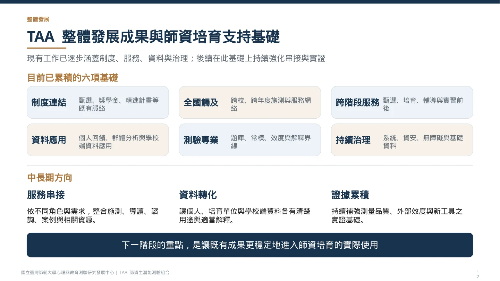

2026.09.18 · 12 頁
01 / SELECTED WORK
TAA
全國性師培服務的持續採用
將測驗結果、學校需求與制度目標，轉成可理解、可採用的工具與服務。

THE CHALLENGE
完成施測之後，服務如何繼續？
各校對測驗的理解、使用方式與培育需求不同。系統推動需要協助主管、承辦人、教師與學生，找到與自己任務相關的應用。
我負責的工作
年度規劃、跨校推動、主管機關溝通、培育需求蒐整、報表與課程工具設計、成果文件，以及研究、行政、資訊和學校使用端的協作。
計畫成果由團隊與合作學校共同累積；這裡呈現我主責的導入、轉譯與服務整合工作。
EXPLORE THE SERVICE
從不同使用者的任務看服務
依既有服務與成果報告整理；實際服務項目與申請方式以官方公告為準。
RESULTS
指標各自回答不同的問題
70.21%
115 學年度甄選採用率
33 校正式採用87%
核定名額涵蓋率
採用校名額占全國核定名額305,633
累積施測人次
截至 2026.07.31，含跨次施測49 所合作與服務網絡、正式甄選採用校數及核定名額涵蓋率，具有不同統計意義。累積施測人次不能換算為不重複使用者人數。
PLANNING & DELIVERY
規劃也要能追蹤與交付

持續運作
固定服務安排執行節奏；需求型服務依申請承接，再據實整理服務場次、件數與對象。
逐步發展
研發與工具優化以證據及可交付成果追蹤。累積施測至少 32 萬人次等數值是下一期目標。
FULL MATERIALS
完整資料與來源
2026.07 · 歷史成果
TAA 全國推動成果與師培支持應用報告
完整 18 頁七月成果報告保留當時統計；本頁目前成果以九月規劃簡報所列基準為準。